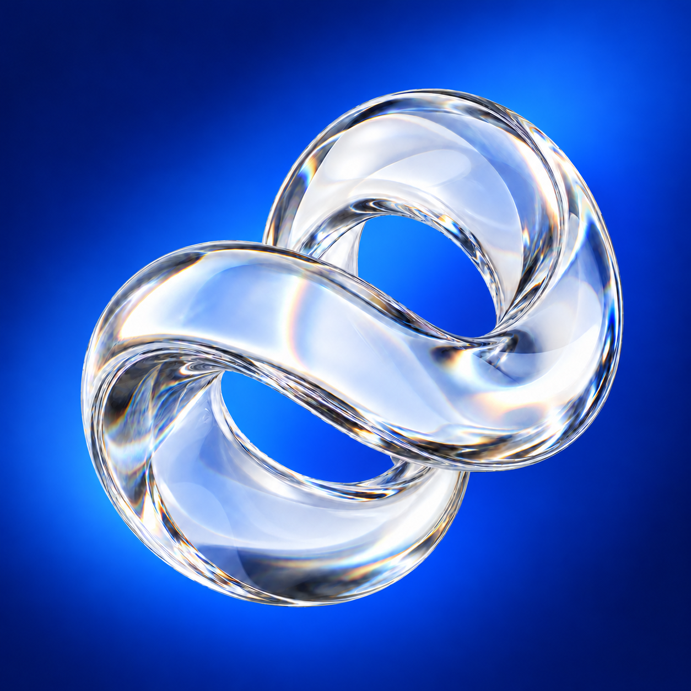

Blu profondo.
Luce, con misura.
Una base minimale ricavata dall’icona: blu per l’identità, ghiaccio per la luce, superfici tranquille per l’interfaccia.

Colori di base
#00115Bblue-950#123BB5blue-700 · azioni#0450EFblue-600#1674FBblue-400 · accento#E1EBFDice-100#F5F8FFwhiteNotte, Luce e Ghiaccio riprendono campioni dell’immagine. Cobalto, Elettrico e i neutri UI sono armonizzati per l’uso digitale.
Tre gradienti, tre ruoli
--vetro-gradient-brandIcona, copertine, momenti di identità.--vetro-gradient-blueAccenti compatti, senza testo piccolo.--vetro-gradient-glassRiflesso discreto sopra una superficie.Semantica: scuro e chiaro
Una superficie, un’azione.
Testo primario e secondario leggibili, bordo sottile, un solo blu operativo.
La stessa gerarchia.
I componenti usano gli stessi nomi: cambiano soltanto i valori del tema.
Ritmo e materia
Font di sistema · pesi 400 / 500
Scala: 14 / 16 / 24 / 40 px
Interlinea: 1,5 testo · 1,15 titoli
Spazi: 4 / 8 / 12 / 16 / 24 / 32 / 48 px
Raggi: 8 px controlli · 16 px superfici
Controlli: altezza minima 44 px
Movimento: 120 / 200 ms · decelerazione morbida
Focus: anello 2 px, distanza 3 px
Vetro: blur 16 px, con fondo opaco di riserva
Usare l’effetto vetro solo per piccoli overlay. La superficie piena garantisce leggibilità anche senza blur. I token di movimento rispettano le preferenze di movimento ridotto.
TV: la materia nativa
Dock, tuner e guida non sono web: sono disegnati con EFL sulla TV. Qui sono ricostruiti con gli stessi valori (--vetro-tv-* in tokens.css) e le stesse immagini (assets/) per poterli provare prima di toccare il C#. Approvato l’11/11/2026 (giro opus6): due materie sole. Banner, Info ed EPG stanno sul velo; tutto il resto è il pannello dell’osd 123. Nessuna ombra, un solo fuoco (la capsula ghiaccio con il testo in ardesia; le icone del Dock tengono anello e alone). Nessun colore di accento: Luce solo per l’avanzamento, il resto del colore arriva da icone e loghi.
Velo · veil_corner.png (#111B2A), un quarto d’ellisse dall’angolo in basso a sinistra, stirato: Banner 1700×600 al 58%, Info 2500×1000 al 66%, EPG 6400×3400 al 94%. Il contrasto lo dà l’alone sotto le lettere (ombra morbida EVAS, nero al 55%).
Pannello · pill_bg ardesia #243448 al 90% + pill_rim bianco al 22%, 2 px fuori. Raggio 40 per i pannelli, capsula per ciò che sta su una riga. Nessuna ombra.
Fuoco · capsula ghiaccio #E4F2FF al 96% (pill_cap), testo in ardesia. Tasti a riposo: la stessa capsula bianca al 14%.
EPG · celle arrotondate (raggio 20) bianche al 9% / 16% in onda / 5% in lettura / 3,5% + tratteggio senza dati.
Testo · SamsungOneUI 200 (numeri grandi, orologio), 500, 600; bianco al 100 / 76 / 64% sul velo, 100 / 70 / 55% sul pannello.
Dock · icone 92 px (112 con focus, sollevate di 4), raggio 16% del lato, anello ghiaccio 2 px e alone al 44% del colore dell’icona.
Movimento · 300 ms a velocità costante, 24 ms tra un’icona e la successiva.
I font SamsungOneUI sono in assets/fonts/; il rendering del browser resta diverso da quello della TV di qualche pixel.
Schermate
Ogni schermata è a 1920×1080 e si scala alla larghezza della pagina. Cambia lo sfondo per vedere la trasparenza: sulla TV le lastre stanno davanti al video dal vivo, quindi il fondo “video” è quello che conta.
Dock
Barra in basso, centrata su 960, pannello con raggio 40 senza ombra. “Source” sopra, “Task manager” sotto. Le icone tengono anello ghiaccio e alone. Sorgente: Design.cs, Layout.cs.
Control center
Giù sul Dock. Una card sola (qui il Task manager) è larga 880 px; due o tre stanno affiancate, 520 px ciascuna a 32 px di distanza, sempre alte 5 righe, e Sinistra / Destra passa dall’una all’altra (dock.html?view=tasks). Una card mostra al massimo 5 righe: una lista più lunga scorre con la selezione e mostra una barra a capsula di 4 px nello spazio a destra delle righe (binario bianco .14, cursore ghiaccio .6). Fondo sulla linea della barra del Dock; solo la card col fuoco mostra la capsula ghiaccio, con il testo in ardesia. Nessun ordinamento a mano: le app più grandi in alto, ordine fissato all’apertura.
Volume bar
Verticale al bordo sinistro, centrata in altezza; livello in Luce. Stessa materia, capsula.
osd 123
La capsula da cui viene la materia di tutto l’OSD: cerchio ghiaccio sulla cifra scelta, “Done” in una pill_chip.
Tuner · Banner
Angolo in basso a sinistra, sul velo, 4 secondi. Il numero grande (peso 200) poggia sulla base della seconda riga; “N min left” segue la testina e l’orario che toccherebbe sparisce.
Tuner · Info
Lo stesso angolo che si allarga in alto e a destra: colonna sinistra 96–936, colonna destra allineata a 1296.
Tuner · Channel list
OK sul telecomando. A destra, centrata in altezza, numeri allineati a destra; la riga scelta è la capsula ghiaccio.
Tuner · Channel pad
Destra sul telecomando. Tasti a capsula bianca al 14%, il tasto scelto è la capsula ghiaccio; a destra, centrato come il Volume a sinistra.
Tuner · Audio toast
Sinistra sul telecomando: due righe, Audio e Subtitles, su un pannello di raggio 40 in alto a destra, 2,2 secondi; Giù mentre è aperto cambia i sottotitoli. La riga appena cambiata è piena, l'altra più quieta; misure e colonne fisse.
EPG
Niente scheda: il velo copre lo schermo al 94%. Corsie di celle arrotondate, fuoco ghiaccio. Con circa 114 oggetti resta la schermata più cara: vedi “Prestazioni”.
Le stesse schermate, a tutto schermo e con i tasti del telecomando, sono in tre pagine a parte: dock.html, tuner.html ed epg.html. Usano le immagini vere (assets/, copiate da dock/res e tuner/res) e la logica di layout del codice C#. ?still le ferma per gli screenshot.
Da aggiungere quando serviranno: Home di Vetro sulla TV, schermata PIN, plugin. Ogni schermata è una funzione in fondo a questa pagina (screens.*): copia una e cambia i dati.
Prestazioni prima di tutto
Misurato sulla Q80A (firmware 2310.0, 145 prove, 2026-11-07; dettagli in graphic-testing/report/FINDINGS.md). Il ciclo del pannello si ferma a 20 ms (50 fps): “gratis” significa che il costo non si vede sotto quel limite.
- Cuoci una volta, poi muovi. Ombre, vetro, gradienti e bordi sono immagini preparate all’avvio (o PNG 9-slice fatti sul Mac). Sullo schermo si spostano, ridimensionano, sfumano o mappano soltanto.
- Mai pixel per frame. Niente blur, gradiente o ombra ricalcolati, nemmeno un
image_data_copy_setin un’animazione. Si animano solo posizione, dimensione, opacità eevas_map. - Trasparenza e render op sono gratis: carte traslucide impilate, ADD/MUL per gli accenti.
- Il budget sono gli oggetti, non gli effetti. Oltre ~200 oggetti vivi la CPU si avvicina a un frame pieno (300 rettangoli in movimento o 200 etichette: ~19 ms su 20).
- Vetro = tinta + bordo sottile + riflesso in alto davanti al video. Il blur di ciò che sta dietro non esiste per un client; si cuoce solo sui nostri sfondi.
- Niente
elm_toolbar(1,6 s per crearlo) né widget con temi pesanti: componenti disegnati da noi (12-48 ms per crearli, nulla per frame). - Niente filtri sugli oggetti (
efl_gfx_filter_program_set) finché non si indaga: hanno mandato in crash l’app. I filtri sul testo (ombra, alone, contorno) funzionano e sono il modo più leggero per rendere leggibile una scritta sul video. - La cottura è lavoro di avvio o di riposo (40-150 ms per ombra o vetro), mai su un cambio di focus.
CPU = millisecondi di processore per frame da 20 ms con 12 copie dell’elemento a schermo (circa un quarto dello schermo); costruzione = costo una tantum per crearne uno. Numeri completi in report/REPORT.md.
Da usare: nessun costo visibile (50 fps, CPU 2-5 ms)
| Elemento | Misura / nota |
|---|---|
Lastre e chip 9-slice già pronti (dock_bg, solid, ring, tinti col colore) | Base di ogni superficie. Si ridimensionano e sfumano liberamente. |
| Ombre cotte, raggio 8-64, doppio livello, alone colorato | CPU 2-3 ms; costruzione 38 / 50 / 73 / 147 ms (blur 8 / 16 / 32 / 64), 128 ms il doppio livello. Una volta per misura, poi si riusa. |
| Carta di vetro cotta: tinta + bordo sottile + riflesso in alto | CPU 4-5 ms; costruzione 112-150 ms. Il fondo nitido si vede attraverso: è l’aspetto voluto. |
Carta “smerigliata” sul nostro sfondo: copia a bassa risoluzione riallargata con smoothing (L10) | L’unica sfocatura vista nei test. CPU 2,7 ms, costruzione 38 ms. Mai sul video dal vivo. |
| Opacità, colore, alpha di gruppo, dissolvenze, pannelli che scorrono | Gratis anche in movimento. |
evas_map: rotazione, zoom, 3D con prospettiva e luce, alpha per vertice, specchio UV | Carosello e carta che gira in movimento: CPU 4 ms. La mappa si imposta una volta, poi si sposta. |
| Render op ADD, SUB, MUL, TINT e il “buco” COPY | CPU 4-9 ms. |
| Gradienti statici (cotti) | CPU 2-3 ms. Controlla il banding sui neri negli scatti prima di scegliere i punti. |
| Testo semplice SamsungOneUI 200-700, 12-72 px, gerarchia per alpha | CPU 3-4 ms. |
Filtri sul testo (evas_object_text_filter_program_set): ombra, alone, contorno | Rendono correttamente; CPU 2,2 ms. Il modo più economico per leggere una scritta sul video. |
| Livelli a schermo intero (immagine o alpha), JPEG 1080p | CPU 1-3 ms. |
| Widget Elementary: button, check, radio, slider, progressbar, label/entry, spinner, list, segment, diskselector, popup | Ok a regime. |
Con cautela: costano qualcosa, spendili apposta
| Elemento | Misura / nota |
|---|---|
| Stili di testo classici (ombra, contorno, alone, ombra morbida) | CPU 10-16 ms per 12 copie di 4-8 etichette, contro ~3,5 ms del testo semplice. Poche scritte sul video, non un’intera lista. |
| Numero di oggetti | 300 rettangoli in movimento, 200 etichette o tante piccole immagini: CPU 19-20 ms su 20. Budget ~200 oggetti vivi. |
Rimpostare una evas_map a ogni frame | CPU 10,6 ms, contro 3-4 ms per una mappa impostata una volta e spostata. |
| Cottura (ogni voce da 40-150 ms sopra) | Solo all’avvio o a riposo, mai su un cambio di focus; mai 12 volte se una sola immagine si può condividere. |
| Componenti disegnati a mano (bottoni, righe, griglia) | 12-48 ms per crearli, nulla per frame. |
Da evitare: misurati come problema o non provati
| Elemento | Misura / nota |
|---|---|
| Qualsiasi lavoro sui pixel per frame: vetro riblurrato, ombra ricalcolata, gradiente riscritto | 1 fps (114 ms a copia), 2 fps (40 ms), 3 fps (31 ms) a 12 copie. |
Caricare un’immagine già pronta a ogni frame (image_data_copy_set in un’animazione) | 21 fps a 12 copie (2,3 ms l’una). |
elm_toolbar | 1,6 s per crearlo, ~110 errori di tema. |
Filtri sugli oggetti (efl_gfx_filter_program_set: blur, curve, grow, tint, ombre a filtro) | Hanno mandato in crash l’app in ogni prova. |
| Snapshot legacy e proxy + filtro come “blur di ciò che sta dietro” | Nessuna sfocatura vista; uno snapshot vede solo la nostra tela, mai il video. |
| Sfocare il video dal vivo | Nessuna API per un client (elm_win_blur_set non esiste). Non prometterlo. |
| Snapshot EO, webp, svg | Non verificati (un errore del test e caricatori da chiarire): per ora non contarci. |
Da tenere d’occhio: la guida ha circa 400 oggetti (140 riempimenti, 260 testi) ma è statica finché non ci si muove, quindi il rischio è nel movimento, non a riposo; non è mai stata misurata sulla TV. Il dock è molto più leggero (una lastra, 10 icone, due pulsanti).
Uso
<link rel="stylesheet" href="design-system/tokens.css">
.panel {
background: var(--vetro-surface);
color: var(--vetro-text);
padding: var(--vetro-space-6);
border: 1px solid var(--vetro-border);
border-radius: var(--vetro-radius-surface);
}
/* Tema chiaro: data-vetro-theme="light" sul contenitore. */- Circa l’80% della UI resta neutro; il blu identifica azioni e selezioni.
- Usare testo chiaro sul Cobalto; riservare Luce a dettagli e gradienti.
- Sui gradienti, collocare il testo in una superficie piena: il contrasto varia lungo il fondo.
- Sulla TV ogni valore è un token
--vetro-tv-*; il valore deciso va poi riportato nella costante C# indicata nel commento, e nulla viene ricalcolato per frame. - I colori di stato funzionali vanno definiti separatamente: il blu non significa successo o errore.